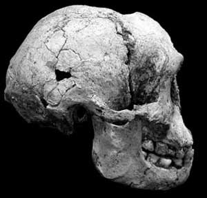

Homo floresiensis : le Hobbit

Homo floresiensis est une espèce d'humain nain découverte dans la grotte de Liang Bua sur l'île indonésienne de Flores en 2003 (Brown et al. 2004, Morwood et al. 2004, Lahr et Foley 2004). H. floresiensis mesurait environ 1 mètre de hauteur et était entièrement bipède, avec une taille cérébrale très réduite de 417 cc. Le crâne présente des dents humaines, un front régressif et pas de menton. Des fossiles de floresiensis ont été découverts datant de 38 000 à 18 000 ans avant notre ère, bien que les preuves archéologiques suggèrent qu'il vivait à Liang Bua entre au moins 95 000 et 13 000 ans avant notre ère. Il utilisait des outils en pierre et le feu, et chassait des éléphants pygmées (principalement des juvéniles), des dragons de Komodo et les rats géants présents sur Flores. Ses découvreurs estiment que floresiensis est une forme naine de Homo erectus - il n'est pas rare que des formes naines de grands mammifères évoluent sur les îles.
Le fossile le plus complet de floresiensis, LB1, se compose d'un crâne presque complet et d'un squelette partiel constitué d'os de jambes, de parties du bassin, des mains et des pieds, ainsi que de quelques autres fragments. LB1 était un adulte d'environ 30 ans, probablement une femme au vu du bassin. Les mâles pouvaient être plus grands, bien que les autres fossiles trouvés jusqu'à présent indiquent uniquement des individus d'une taille similaire à celle de LB1. En raison des conditions humides et de la jeunesse, les os de LB1 ne se sont pas fossilisés (c'est-à-dire qu'ils ne se sont pas transformés en pierre) et auraient, selon les rapports, la consistance de purée de pommes de terre.
La taille du cerveau du crâne de floresiensis est extraordinairement petite, soit 380cc. C'est aussi petit que celui de n'importe quel australopithèque jamais découvert, et assez typique pour un chimpanzé. (Les chimpanzés varient d'environ 300 à 500cc, avec une moyenne d'environ 400cc, mais sont physiquement plus grands que floresiensis.) C'est plus petit que ce qui serait attendu même pour une forme naine de Homo erectus, et suggère qu'il y avait une sélection active pour une petite taille de cerveau pour une raison ou une autre. (Par ailleurs, les pygmées humains ne ressemblent en rien à H. floresiensis ; leurs cerveaux sont presque aussi grands que ceux des humains de taille normale)
Il y a eu certaines spéculations selon lesquelles les outils en pierre découverts avec elle ont en réalité été fabriqués par Homo sapiens, principalement parce qu'il est difficile de croire qu'une créature avec un cerveau si petit aurait pu fabriquer de tels outils en pierre sophistiqués. Cependant, il n'existe aucune autre preuve en soutien à cette hypothèse, et si ce n'était pas pour la petite taille du cerveau, il n'y aurait aucune hésitation à supposer que floresiensis a fabriqué les outils en raison de l'association étroite entre les outils et les fossiles. Les mêmes outils sont trouvés à travers l'ensemble du dépôt (de 90 000 à 13 000 ans avant notre ère) et, de manière intéressante, ils ne ressemblent à aucun outil en pierre fabriqué par Homo erectus.
Puisque la transition de erectus à floresiensis représente une réduction drastique de la taille corporelle, certaines spéculations suggèrent que floresiensis aurait pu évoluer à partir d'une espèce plus petite, telle que les hominiens de Dmanisi découverts en Géorgie, dont certains présentent une taille cérébrale comprise entre 600 et 700 cc, inférieure aux 800-900 cc typiques des premiers erectus.
Flores a également fait la une des journaux en 1998, lorsque Mike Morwood (qui est également impliqué dans cette nouvelle découverte) a annoncé la découverte d'outils en pierre sur un autre site de Flores datant de 840 000 ans. À l'époque, il était supposé qu'il s'agissait d'une preuve de Homo erectus, puisque erectus était le seul hominidé pré-sapiens connu pour avoir existé en Indonésie. Étant donné que Flores est censé avoir toujours été séparé de Java par un passage maritime profond, cela indiquait une capacité jusqu'alors inconnue de H. erectus à traverser des barrières maritimes. Il est désormais possible que l'hominidé responsable de cette preuve archéologique précoce n'ait pas été Homo erectus, mais autre chose, tel qu'un hominidé de Dmanisi ou une forme partiellement évoluée de floresiensis.
Les humains modernes sont arrivés sur Flores entre 55 000 et 35 000 ans avant notre ère et ont probablement interagi avec floresiensis, bien qu'il n'existe aucune preuve de cela à Liang Bua. Cependant, les légendes indonésiennes racontent l'existence de créatures appelées Ebu Gogo, qui étaient petites, muettes et marchaient avec une démarche étrange. Cela sonne d'une manière étonnamment suggestive de floresiensis, mais cela pourrait facilement être une coïncidence : si floresiensis avait été découvert en Irlande, nous nous demanderions peut-être s'ils étaient des lutins.
Il existe une possibilité que l'ADN, en particulier l'ADN mitochondrial (ADNmt), puisse être récupéré à partir des os. Leur âge relativement récent et le fait que les os ne se soient pas fossilisés augmentent la probabilité que cela soit possible, mais le climat tropical d'Indonésie réduit les chances de succès. Les températures élevées dégradent l'ADN, et les fossiles de Néandertal à partir desquels de l'ADNmt a été extrait proviennent tous de climats beaucoup plus froids qu'en Indonésie. Nous devrons attendre et voir si l'ADNmt peut être extrait avec succès de LB1. Si c'est le cas, cela devrait s'avérer très éclairant. (Certains créationnistes prédisent qu'il montrera que floresiensis sont des humains modernes, mais si, comme le croient Brown et al., ils descendent de Homo erectus, l'ADNmt de floresiensis devrait être encore plus différent des humains modernes que celui des Néandertaliens.)
La découverte de H. floresiensis ne change pas le tableau général de l'évolution humaine, y compris notre lignée - elle n'était certainement pas ancêtre de nous. Mais puisque c'est l'exemple le plus extrême d'adaptation humaine jamais trouvé, cela suggère que les humains sont plus sujets aux forces évolutives que nous ne le pensons généralement. Et le fait que floresiensis ait vécu si récemment et pourtant soit resté inconnu jusqu'à présent suggère qu'il pourrait y avoir d'autres surprises en attente dans l'arbre généalogique de l'humanité.
Autres interprétations ?
Anatomist Maciej Henneberg a affirmé that the skull is extremely similar to that of a microcephalic specimen from Crete, microcephaly being a disease that causes small brain sizes. However, Peter Brown and his team have considered and rejected this explanation:Il est plus difficile, je suppose, d'exclure l'analogie avec les humains modernes anormaux, comme les nains hypophysaires ou les nains microcéphales, car vous pouvez y trouver des personnes de petite taille qui ont également une petite taille cérébrale. Très peu de ces personnes atteignent réellement l'âge adulte et elles présentent une gamme de caractéristiques distinctives, selon le syndrome particulier dont elles souffrent, à travers le crâne et le reste du squelette. Aucune de ces caractéristiques n'est présente chez Liang Bua. Il possède un ensemble de traits clairement archaïques qui sont répétés chez une variété d'hominidés précoces et ces traits archaïques ne sont pas trouvés chez aucun humain anormal qui ait jamais été enregistré. Nous disposons maintenant des restes de 5 ou 6 autres individus du site, donc il ne s'agit pas d'un seul cas. Il existe maintenant une population de ces entités et elles partagent toutes les mêmes caractéristiques. (Peter Brown, dans une interview avec Scientific American)Henneberg is a respected anatomist and his claim merits assessment by other scientists. However Brown is also an excellent anatomist, with the advantage of many months access to the fossils, and his paper was extensively peer-reviewed by other experts. Brown also claims that some of the other fossils, about which details are not yet public, support his interpretation, and several other researchers agree that LB1 is just too different to be a "peculiar modern human", in Chris Stringer's words (Balter 2004).
Henneberg affirme également que la taille de l'os du radius est cohérente avec un individu mesurant entre 1,51 et 1,62 mètre, considérablement plus grand que LB1. Cela contraste avec les découvreurs, qui ont déclaré que la taille de l'os est cohérente avec celle du squelette de LB1. Cette discordance sera sans doute approfondie.
Le paléoanthropologue le plus éminent d'Indonésie, Teuku Jacob, a également été rapporté dans la presse comme affirmant que LB1 n'était pas un membre d'une nouvelle espèce, mais un membre de la « race australomélanesienne » des humains modernes, et âgé de seulement 1 300 à 1 800 ans.
Mars 2005 : Falk et ses collègues ont publié un article (Falk et al. 2005) comparant un endocaste virtuel de LB1 à ceux d'humains modernes, y compris un pygmée et un microcéphale, Homo erectus, d'autres fossiles, et des singes. Leurs résultats montrent que LB1 est très différent de celui du microcéphale et le plus proche de celui de H. erectus, bien que ce verdict ne soit pas accepté par Henneberg. (Voir d'autres commentaires ici)
Octobre 2005 : Les découvreurs du hobbit ont publié un nouveau papier (Morwood et al. 2005) décrivant plus de fossiles, y compris certains ossements d'avant-bras du premier squelette de hobbit, une deuxième mâchoire et de nombreux fragments d'autres individus. Selon eux et certains autres commentateurs, les nouveaux fossiles confirment que le hobbit était un membre typique de sa population et non un individu aberrant (en fait, certains os proviennent d'un individu plus petit que le premier hobbit).
Depuis lors, d'autres scientifiques ont affirmé que les squelettes de Flores ressemblent à ceux de personnes atteintes du syndrome de Laron, un trouble génétique qui provoque une taille très réduite et une petite taille de crâne. Cependant, la taille du squelette de Flores se situe à l'extrême basse de la fourchette des échantillons féminins atteints du syndrome de Laron, et le crâne est plus petit que celui de tous les patients atteints du syndrome de Laron. De plus, les critiques ont noté d'autres différences entre les crânes des patients atteints du syndrome de Laron et le crâne de Flores.
En 2014, une autre affirmation a été faite par une équipe de scientifiques (incluant Maciej Henneberg) selon laquelle LB1 souffrait du syndrome de Down, mais d'autres scientifiques ont répondu en soulignant les différences significatives entre LB1 et les individus atteints du syndrome de Down. Étant donné que le syndrome de Down est une condition très bien connue, si LB1 était un squelette d'humain moderne atteint du syndrome de Down, il semble improbable qu'il n'ait pas été reconnu comme tel.
Réponses des créationnistes
Given the massive media attention Homo floresiensis has received, creationists have naturally responded to it. Answers in Genesis has released two articles by Carl Wieland, Os nains trempés and Boiter le Hobbit, arguing that it is just a variety of modern human. ICR is more cautious, adopting a wait-and-see attitude. Some of the creationist articles refer to the criticisms of mainstream scientists such as Henneberg and Jacob mentioned above. Collectively, the articles are full of claims about how various aspects of the Homo floresiensis discovery cause problems for or are inconsistent with evolutionary theory. There are far too many of these to address individually, but none of them are remotely convincing.L'article le plus divertissant est probablement l'entretien avec Ken Ham publié par Agape Press, Le créationnisme pourrait expliquer mieux les restes squelettiques que le darwinisme. Ham est décrit comme un « expert en sciences » (c'est-à-dire un ancien professeur de sciences au lycée), et l'explication créationniste de floresiensis s'avère consister en des mécanismes évolutifs.
Beaucoup de créationnistes semblent avoir de véritables difficultés avec les outils en pierre trouvés ailleurs sur Flores et datés de 840 000 ans. Les deux articles de Carl Wieland, l'interview de Ken Ham, et l'article de Harrub et Thompson affirment tous que les outils en pierre de 840 000 ans ont été découverts sur le site du floresiensis et posent un problème pour les évolutionnistes. Ham exprime cela d'une manière particulièrement incohérente :
Cela crée un problème, selon le porte-parole de l'AIG : « car alors ils ont daté les outils en pierre à 800 000 ans. Donc ils disent peut-être que les outils ont été utilisés par quelqu'un d'autre, et ensuite ces humains particuliers sont arrivés plus tard -- ou quelque chose comme ça. »Ham dit que les évolutionnistes ne savent tout simplement pas quoi faire avec ces informations contradictoires.
Ce conflit n'existe que dans l'imagination des créationnistes. Comme l'indique clairement l'article de Morwood et al. (2004), ces outils en pierre ont été découverts il y a au moins 6 ans sur un site différent, situé à environ 50 km de là, et n'ont aucun rapport avec les outils en pierre découverts à Liang Bua.
(Voir également mon article sur le Doigt du Panda concernant Answers in Genesis et floresiensis)
Références
Balter M. (2004) : Des sceptiques s'interrogent sur le fait que l'hominoïde de Flores soit une nouvelle espèce. Science, 306:1116
Brown P., Sutikna T., Morwood M., Soejono R.P., Jatmiko, Saptomo E.W. et al. (2004) : Un nouveau hominidé de petite taille du Pléistocène supérieur de Flores, en Indonésie. Nature, 431:1055-61.
Falk D., Hildebolt C., Smith K., Brown P., Jatmiko, Saptomo E.W. et al. (2005) : Le cerveau de LB1, Homo floresiensis. Sciencexpress, 3 mars 2005 : 1.
Lahr M.M. et Foley R. (2004) : L'évolution humaine à petite échelle. Nature, 431:1043-4. (Commentaire sur Homo floresiensis)
Morwood M., Soejono R.P., Roberts R.G., Sutikna T., Turney C.S.M., Westaway K.E. et al. (2004) : Archéologie et âge d'un nouveau hominidé de Flores en Indonésie orientale. Nature, 431:1087-91.
Morwood M. et al. (2005) : Nouvelles preuves de l'existence d'hominins de petite taille au Pléistocène supérieur de Flores, en Indonésie. Nature, 437:1012-1017.
Liens
Homo floresiensis, de Wikipedia
Spécial Nature sur l'homme de Flores
Une nouvelle espèce humaine miniaturisée découverte, par Scientific American
« Hobbit » découvert : un ancêtre humain minuscule trouvé en Asie, par National Geographic
Commentaire de Carl Zimmer sur The Loom
Commentaire de Paul Myers sur Pharyngula
Commentaire de blog de John Hawks sur Flores
Liens créationnistes
Ossements nains trempés, par Carl Wieland (Answers in Genesis)
Le hobbit boite-t-il ?, par Carl Wieland (Answers in Genesis)
Une nouvelle « réévaluation » de l'« évolution humaine », par Frank Sherwin (Institute for Creation Research)
Le créationnisme pourrait expliquer mieux que le darwinisme les restes squelettiques, par Mary Rettig (Agape Press)
L'érosion de la crédibilité de l'évolution, par Kelly Hollowell (WorldNetDaily)
Hérésie du Hobbit, par Brad Harrub et Bert Thompson
Cette page fait partie du FAQ sur les hominidés fossiles de l'Archive TalkOrigins.
Page d'accueil |
Espèces |
Fossiles |
Créationnisme |
Lecture |
Références
Illustrations |
Nouveautés |
Retour d'information |
Recherche |
Liens |
Fiction
http://www.talkorigins.org/faqs/homs/flores.html, 31/05/2015
Copyright © Jim Foley
|| Envoyez-moi un email